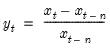
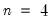
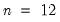
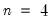
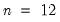

@pchy Series Utility One-year percentage change (in decimal fraction). Syntax: @pchy(x) x: series n: integer, series Return: series Returns one-year percentage change (in decimal fraction) in the series x:  where is the lag associated with the yearly frequency (e.g.,  for quarterly data,  for monthly data). This function is panel aware. Examples If x is a series of monthly profits, then show @pchy(x) produces a linked series of one-year profit growth in decimal fraction. Cross-references See also @pc, @pca, @pch, @pcha, and @pcy.


is the lag associated with the yearly frequency (e.g.,  for quarterly data,  for monthly data).
If x is a series of monthly profits, then